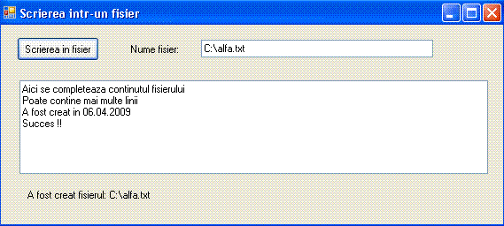
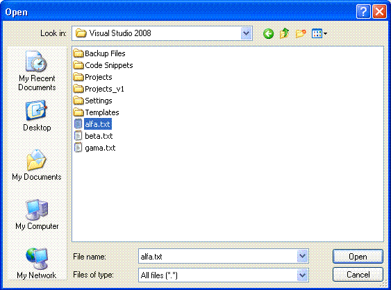
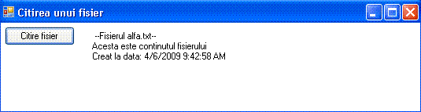
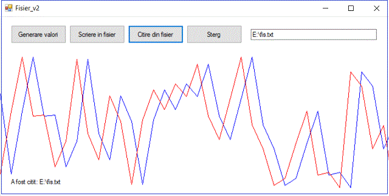
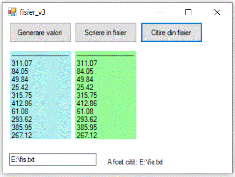

Un fisier, este o colectie de date stocata pe un mediu
permanent de stocare (hard disk, memory stik, CD etc)
Datele inscrise in fisiere sunt persistente,
pastrandu-se si dupa inchiderea calculatorului.
Tipuri de fisiere
Un fisier este identificat prin nume si extensie.
Numele poate fi dat arbitrar iar extensia reflecta de obicei tipul de date si
aplicatia ce foloseste datele din fisier. In functie de tipul de date, se pot
defini doua tipuri de fisiere: fisiere text sau binare.
· Fisiere text
Un fisier text contine informatii sub forma text.
Textele contin litere codificate ASCII
· Fisiere binare
Un fisier binar poate stoca, pe langa informatii de tip
text, orice alt fel de informatii, cum ar fi imagini, baze de date programe
executabile etc. Fisierele binare sunt accesate in mod diferit in functie de
aplicatia care le deschide. Pentru programatori, cele mai importante fisiere
sunt fisierele text, acestea , ofera o metoda standard de accesare fiind simplu
de utilizat.
· Biblioteca standard fstream
Functiile pentru citirea si scrierea intr-un fisier
sunt grupate in biblioteca "fstream" . Bibliotece "fstream"
se include in aplicatii folosind :
#include < fstream >
Limbajul nu defineste acest tip de data special pentru
ca fisiere. Fisierele reprezinta mai degraba niste fluxuri de intrare / iesire
standard puse la dispozitia utilizatorului. Din acest motiv biblioteca se
numeste "fstream".
In biblioteca "fstream" se definesc trei
tipuri de date:
· Accesul
la fisiere
Cand se acceseaza un fisire (fie pentru citire fie
pentru scriere ) se parcurg urmatorii pasi:
· Deschiderea unui fisier
Inainte de a se putea scrie sau citi intr-un fisier, el
trebuie deschis. Deschiderea unui fisier stabileste o tegatura intre fisier si
un obiect flux de date din program. Obiectul flux de date poate fi unul din
obiectele "istream" "ostream" sau "stream"
· Deschiderea unui fisier pentru citire
Obiectul flux de date folosite pentru deschiderea unui
fisier pentru citire, poate fi unul din obiectele "istream" sau
"stream".
Deschiderea unui fisier pentru scriere se face invocand
metoda open astfel:
ifstream fis_scr;fis_scr.open("nume fisier"); |
S-a
deschis deci obiectul de flux fis_scr si s-a invocat metoda open asupra
fisierului "nume fis"
Instructiunile de sus pot fi comasate intr-o singura
istructiune astfel:
ifstream fis_r("nume fisier"); |
· Deschiderea unui fisier pentru
scriere
Obiectul flux de date folosite pentru deschiderea unui
fisier pentru scriere, poate fi unul din obiectele "ostream" sau
"stream".
Deschiderea unui fisier pentru scriere se face invocand
metoda open astfel:
ofstream fis_scr;fis_scr.open("nume fisier"); |
S-a
deschis deci obiectul de flux fis_scr si s-a invocat metoda open asupra fisierului
"nume fis"
Deschiderea unui fisier pentru scriere poate fi
realizata utilizand o singura instructiune de forma:
ofstream fis_w("nume fisier"); |
· Inchiderea unui fisier
Obiectul flux de date folosite pentru deschiderea unui
fisier pentru scriere, poate fi unul din obiectele "ostream" sau
"stream".
Inchiderea unui fisier se face invocand metoda close
astfel:
ifstrean fis_scr;fis_scr.open("nume fisier");// s-a deschis fisierul "nume fisier" pentru citirefis_scr.close();//s-a inchis fisierul |
· Citirea unui fisier
Citirea caracterelor dintr-un fisier se pot face
caracter cu caracter si afisarea acestora pe masura ce au fost citite.
// Programul cere numele unui fisier text, il deschide si afiseaza continutul.#include "stdafx.h"#include < iostream >#include < fstream >using namespace std;int main(void){system("TITLE Citirea unui fisier text ");system("COLOR F9");char c;char nume_f[80]; cout << "\n\tSe afiseaza un fisier text\n"; cout << "\n\tIntroduceti numele fisierului : "; cin.getline(nume_f,80); ifstream fis_r(nume_f); if(!fis_r){ cout << "\n\tNu se poate deschide fisierul : " << nume_f ; cin.get(); return -1; } cout << "\n\tContinutul fisierului este: \n\n\n"; while(fis_r.get(c)) cout << c; fis_r.close(); cin.get(); return 0;} |
Citirea caracterelor dintr-un fisier se poate face si
linie cu linie. In acest caz avem nevoie de un buffer de caractere care
pastreaza o intreaga linie. Vom defini un sir de caractere
"linie[100]" in care se citeste o linie din fisier, apoi se afiseaza.
// Programul cere numele unui fisier text, il deschide si afiseaza continutul.#include "stdafx.h"#include < iostream >#include < fstream >using namespace std;int main(void){system("TITLE Citirea unui fisier text linie cu lnie ");system("COLOR F9");char c;char nume_f[80],linie[100]; cout << "\n\tSe afiseaza un fisier text\n"; cout << "\n\tIntroduceti numele fisierului : "; cin.getline(nume_f,80); ifstream fis_r(nume_f); if(!fis_r){ cout << "\n\tNu se poate deschide fisierul : " << nume_f ; cin.get(); return -1; } cout << "\n\tContinutul fisierului este: \n\n\n"; while(!fis_r.eof()){ fis_r.getline(linie,100); cout << linie << '\n'; } fis_r.close(); cin.get(); return 0;} |
· Scrierea intr-un fisier
Scrierea in fisier se poate face caracter cu caracter,
pe masura ce ele sosesc de la tastatura.
// Programul cere numele unui fisier text, il preia apoi scrie in el.#include "stdafx.h"#include < iostream >#include < fstream >using namespace std;int main(void){system("TITLE Crearea si scrierea intr-un fisier ");system("COLOR F9"); char nume_f[80]; char c; cout << "\n\tProgramul creaza un fisier\n"; cout << "\n\tIntroduceti numele fisierului "; cin.getline(nume_f,80); ofstream fis_w(nume_f); if(!fis_w){ cout<<"\n\tNu se poate crea fisierul " << nume_f <<'\n'; cin.get(); return -1; } cout<<"\n\tIntroduceti caractere.Sfarsit Enter CTRL+Z\n"; while(cin.get(c)) fis_w << c; fis_w.close(); cin.clear(); cout << "\n\tApasati o tasta "; cin.get(); return 0;} |
Caracterele introduse de la tastatura pot fi preluate
intr-un buffer si apoi transferate in fisier.
// Programul cere numele unui fisier text, il preia apoi scrie in el.// Caracterele se preiau in bufferul txt// txt se scrie in fisier.#include "stdafx.h"#include < iostream >#include < fstream >using namespace std;int main(void){system("TITLE Crearea si scrierea intr-un fisier ");system("COLOR F9"); char nume_f[80]; char txt[80]; cout << "\n\tProgramul creaza un fisier\n"; cout << "\n\tIntroduceti numele fisierului "; cin.getline(nume_f,80); ofstream fis_w(nume_f); if(!fis_w){ cout<<"\n\tNu se poate crea fisierul " << nume_f <<'\n'; cin.get(); return -1; } cout<<"\n\tIntroduceti caractere."; cin.getline(txt,80); fis_w << txt; fis_w.close(); cin.clear(); cout << "\n\tApasati o tasta "; cin.get(); return 0;} |
· Scrierea intr-un fisier in spatiul
System
Sa realizam pentru inceput o aplicatie CLR in spatiul
System, care creaza un fisier text si scrie in el.
// Aplicatie CLR in spatiul System// Programul scrie un text intr-un fisier .#include "stdafx.h"#include < iostream >using namespace std;using namespace System;using namespace System::IO;int main() { system("TITLE Crearea si scrierea intr-un fisier "); system("COLOR F9"); String^ nume_f; Console::WriteLine("\n\tIntroduceti numele fisierului:"); nume_f=Console::ReadLine(); StreamWriter^ sw = gcnew StreamWriter(nume_f); sw->WriteLine("Text scris in fisier!"); sw->WriteLine(DateTime::Now); sw->Close(); Console::WriteLine("\n\n\tFisierul:" +nume_f+" a fost creat!" ); cin.get(); return 0;} |
In CLR, Windows Forms Application se pot realiza
operatii cu fisiere folosind aceleasi instructiuni pe care le-am utilizat
anterior.Vom realiza deci o aplicatie Windows Forms Application numita fisier_v0
care permite cautarea crearea si scrierea intr-un fisier.
- Plasam un obiect de tip button numit button1 apoi
schimbam proprietatea "Text" in "Scriere fisier"
- Plasam un obiect de tip textBox numit textBox1 in
care vom scrie numele fisierului. Se poate schimba atributul text cu un nume
initial de fisier care va putea fi pastrat sau schimbat in timpul rularii
programului.
- Plasam un obiect de tip textBox numit textBox2 in
care vom scrie continutul fisierului. Se poate schimba atributul text cu
continutul initial al fisierului care va putea fi pastrat sau schimbat in
timpul rularii programului. Se seteaza proprietatea "Multiline" la
true.
- Plasam un obiect de tip label numit label1, in care
vom afisa un mesaj de terminare operatiune de scriere..
- Deoarece vom lucra si cu spatiul de nume System::IO
, vom completa namespace fisier_v0 cu:
using namespace System::IO;
Pe evenimentul click al obiectului button1 punem
procedura :
System::IO::StreamWriter^ fis_w; fis_w= gcnew System::IO::StreamWriter(this->textBox1->Text); fis_w->WriteLine(this->textBox2->Text); fis_w->Close(); this->label1->Text="A fost creat fisierul: "+this->textBox1->Text; |
Rulam aplicatia si obtinem:

· Citirea unui fisier in spatiul System
Urmatoarea aplicatie deschide un fisier text si
afiseaza continutul.
// Programul citeste un text dintr-un fisier .// Aplicatie CLR in spatiul System// Aplicatia nu trateaza eventuale erori la deschiderea fisierului.#include "stdafx.h"#include < iostream >using namespace std;using namespace System;using namespace System::IO;int main() { system("TITLE Citirea unui fisier text "); system("COLOR F9"); String^ nume_f; String^ text; Console::Write("\n\tIntroduceti numele fisierului:"); nume_f=Console::ReadLine(); StreamReader^ sr= gcnew StreamReader(nume_f); int nr_lin = 0; Console::WriteLine("\n\n\tContinutul fisierului:"+nume_f+" este:\n\n" ); while ((text = sr->ReadLine()) != nullptr) { nr_lin++; Console::WriteLine("\tlinia :"+nr_lin+"\t"+text ); } sr->Close(); cin.get(); return 0;} |
Programul anterior, nu tine cont de eventualele erori
in caz ca fisierul nu este gasit sau nu se pot citi date din fisier. Vom relua
aplicatia si vom trata aceste cazuri.
// Programul citeste un text dintr-un fisier .// Aplicatie CLR in spatiul System// Aplicatia trateaza eventuale erori la deschiderea fisierului.#include "stdafx.h"#include < iostream >using namespace std;using namespace System;using namespace System::IO;int main() { system("TITLE Citirea unui fisier text "); system("COLOR F9"); String^ nume_f; String^ text; try { Console::Write("\n\tIntroduceti numele fisierului:"); nume_f=Console::ReadLine(); StreamReader^ sr = gcnew StreamReader(nume_f); int nr_lin = 0; Console::WriteLine("\n\n\tContinutul fisierului:"+nume_f+" este:\n\n" ); while ((text = sr->ReadLine()) != nullptr) { nr_lin++; Console::WriteLine("\tlinia :"+nr_lin+"\t"+text ); } sr->Close(); } catch (Exception^ e){ if (dynamic_cast < FileNotFoundException^ > (e)) Console::WriteLine("\n\n\tFisierul "+nume_f+" nu a fost gasit!"); else Console::WriteLine("\n\n\tNu se pot citi date din fisierul: "+nume_f); } cin.get(); return 0;} |
In
aplicatiile in care se doreste deschiderea unui fisier si afisarea continutului
ar fi util sa completam aplicatia cu o aplicatie ce ne permite cautarea
fisierului. Acest lucru este posibil numai in aplicatii de genul Windows Forms
Application in care se poate crea o instanta a unei clase care realizeaza
cautarea fisierelor in mod interactiv. Vom realiza deci o aplicatie Windows
Forms Application numita fisier_v1 care permite cautarea fisierului si
afisarea continutului acestuia (primele 500 de caractere).
- Plasam un obiect de tip button numit button1 apoi
schimbam proprietatea "Text" in "Citire fisier"
- Plasam un obiect de tip openFileDialog numit
openFileDialog1.
- Plasam un obiect de tip label numit label1, in care
vom afisa continutul fisierului. Completam #pragma region cu :
static System::String^ alfa;static System::String^ sir_c;static System::IO::Stream^ stream_r;static array < unsigned char,1 >^ text = gcnew array < unsigned char,1 > (500);static int i; |
Pe
evenimentul click al obiectului button1 punem procedura :
C++
OpenFileDialog^ openFileDialog1 = gcnew OpenFileDialog; openFileDialog1->InitialDirectory = "c:\\"; openFileDialog1->Filter = "txt files (*.txt)|*.txt|All files (*.*)|*.*"; openFileDialog1->FilterIndex = 2; openFileDialog1->RestoreDirectory = true; if ( openFileDialog1->ShowDialog() == System::Windows::Forms::DialogResult::OK ) { if ( (stream_r = openFileDialog1->OpenFile()) != nullptr ) { stream_r->Read(text,1,499); sir_c=" "; for (i=1 ; i < 499; i++){ alfa=System::Convert::ToString(System::Convert::ToChar(text[i])); sir_c+=alfa; } this->label1->Text=sir_c; stream_r->Close(); } } |
C#
String alfa; String sir_c; System.IO.Stream stream_r; byte[] text = new byte[500]; int i; int lung=1; private void button1_Click(object sender, EventArgs e) { OpenFileDialog openFileDialog1 = new OpenFileDialog(); openFileDialog1.InitialDirectory = "c:\\"; openFileDialog1.Filter = "txt files (*.txt)|*.txt|All files (*.*)|*.*"; openFileDialog1.FilterIndex = 2; openFileDialog1.RestoreDirectory = true; if ( openFileDialog1.ShowDialog() == System.Windows.Forms.DialogResult.OK ) { stream_r = openFileDialog1.OpenFile(); if (stream_r!=null) { stream_r.Read(text,1,499); sir_c=" "; for (i=1 ; i < 499; i++){ alfa=System.Convert.ToString(System.Convert.ToChar(text[i])); sir_c+=alfa; } this.textBox1.Text = sir_c; stream_r.Close(); } } |
Dupa rularea aplicatiei si apasarea butonului citire
fisier, obtinem o fereastra de dialog ce ne permite sa selectam fisierul dorit.

Sa presupunem ca am selectat un fisier text
"alfa.txt". Dupa selectia fisierulii, se afiseaza continutul acestuia
:

· Utilizarea fisierelor ca suport de
date
In diverse aplicatii pentru controlul si monitorizarea
proceselor tehnologice se folosesc fisiere ca suport pentru datele
achizitionate. Fisierele sunt utilizate pentru realizarea
"istoricelor" de date fie pentru partajarea datelor intre diverse
aplicatii.
Sa realizam o aplicatie Windows Forms Application
numita fisier_v2 care permite genereaza un set de date, le afiseaza si
totodata le salveaza intr-un fisier text. Majoritatea protocoalelor de
comunicatii intre diverse sisteme sunt protocoale de tip text. Datele si
comenzile sunt codificate la nivel de caracter. Din acest motiv vom folosi
fisiere de tip text pentru suportul de date. Fisierele text, contin caractere
codificate ASCII in setul extins. Caracterele ASCII din setul extins sunt
reprezentate pe un octet deci valoarea lor se incadreaza in domeniul 0-255.
Orce valoare de orce tip poate fi codificata folosind 1 sau mai multi octeti
deci poate fi codificata folosind 1 sau mai multe caractere .
In urmatorul exemplu vom genera valori intre 0 si 255
deci vom codifica datele utilizand cate un caracter pe cate o valoare.
Dupa generarea unui set de valori acestea vor fi
afisate grafic si salvate intr-un fisier. Aplicatia poate deschide fisierul
creat sau alte fisiere care contin date, create anterior, si sa afiseze datele
din aceste fisiere.
Generam un nou proiect de tipul Windows Forms
Application numita fisier_v2 . In cadrul acestei aplicatii se vor genera
valori intre 0 si 255. La afisarea datelor nu vom face scalare in functie de
inaltimea form-ului asa ca vom seta proprietatea "Size-Height" la cel
putin 359 px.
- Plasam un obiect de tip button numit button1 apoi
schimbam proprietatea "Text" in "Generare valori"
- Plasam un obiect de tip button numit button2 apoi
schimbam proprietatea "Text" in "Scriere in fisier".
Atribuim proprietatii "Enabled" valoarea false.
- Plasam un obiect de tip button numit button3 apoi
schimbam proprietatea "Text" in "Citire din fisier"
- Plasam un obiect de tip button numit button4 apoi
schimbam proprietatea "Text" in "Sterg"
- Plasam un obiect de tip textBox numit textBox1 in
care vom scrie numele fisierului. Se poate schimba atributul text cu un nume
initial de fisier care va putea fi pastrat sau schimbat in timpul rularii
programului.
- Plasam un obiect de tip label numit label1, in care
vom afisa diverse mesaje .
- Deoarece vom lucra si cu spatiul de nume System::IO ,
vom completa namespace fisier_v0 cu:
using namespace System::IO;
Completam deci #pragma region cu :
static int nr_max; static unsigned char val; static array < unsigned char,1 >^ valori = gcnew array < unsigned char,1 > (0); System::Drawing::Graphics^ Desen; System::Drawing::Pen^ Creion_albastru; System::Drawing::Pen^ Creion_rosu; |
Pe evenipentul "Paint" al form-ului, punem:
br>
nr_max=1+this->Width/20; Desen = this->CreateGraphics(); Creion_albastru=gcnew System::Drawing::Pen(System::Drawing::Color::Blue); Creion_rosu=gcnew System::Drawing::Pen(System::Drawing::Color::Red); |
Pe
evenimentul click al obiectului button1 punem procedura :
int i=0,x,y,x_v,y_v; valori = gcnew array < unsigned char,1 > (nr_max); System::Random^ n = gcnew System::Random(); Desen->Clear(System::Drawing::Color(this->BackColor)); x_v=0; val=n->Next(255); valori[0]=val; y_v=this->Height-50-val; i=1; for ( x=20; x <= this->Width; x+=20,i++){ val=n->Next(255); valori[i]=val; y=this->Height-50-val; Desen->DrawLine( Creion_albastru,x_v,y_v,x,y); x_v=x; y_v=y; } this->button2->Enabled=true; |
Pe
evenimentul click al obiectului button2 punem procedura :
System::IO::StreamWriter^ fis_w; fis_w= gcnew System::IO::StreamWriter(this->textBox1->Text); for (int i=0; i < nr_max; i++) fis_w->Write(valori[i]); fis_w->Close(); this->label1->Text="A fost creat fisierul: "+this->textBox1->Text; |
Pe
evenimentul click al obiectului button3 punem procedura :
int i=0,x,y,x_v,y_v; System::IO::StreamReader^ fis_r; fis_r= gcnew System::IO::StreamReader(this->textBox1->Text); val=fis_r->Read(); val=fis_r->Read(); y_v=Height-50-val; x_v=0; for ( x=20; x <= this->Width; x+=20){ val=fis_r->Read(); y=this->Height-50-val; Desen->DrawLine( Creion_rosu,x_v,y_v,x,y); x_v=x; y_v=y; } fis_r->Close(); this->label1->Text="A fost citit: "+this->textBox1->Text; |
Pe
evenimentul click al obiectului button4 punem procedura :
Desen->Clear(System::Drawing::Color(this->BackColor)); |
C#
namespace fisier_v2{ public partial class Form1 : Form { public Form1() { InitializeComponent(); } static int nr_max; Char val; static Char[] valori = new Char[0]; System.Drawing.Graphics Desen; System.Drawing.Pen Creion_albastru; System.Drawing.Pen Creion_rosu; private void Form1_Paint(object sender, PaintEventArgs e) { nr_max=1+this.Width/20; Desen = this.CreateGraphics(); Creion_albastru=new System.Drawing.Pen(System.Drawing.Color.Blue); Creion_rosu=new System.Drawing.Pen(System.Drawing.Color.Red); } private void button1_Click(object sender, EventArgs e) { int i=0,x,y,x_v,y_v; Array.Resize(ref valori,nr_max+1); System.Random n = new System.Random(); Desen.Clear(this.BackColor); x_v=0; val=System.Convert.ToChar(n.Next(255)); valori[0]=val; y_v=this.Height-50-val; i=1; for ( x=20; x <= this.Width; x+=20,i++){ val=System.Convert.ToChar(n.Next(255)); valori[i]=val; y=this.Height-50-val; Desen.DrawLine( Creion_albastru,x_v,y_v,x,y); x_v=x; y_v=y; } this.button2.Enabled=true; } private void button2_Click(object sender, EventArgs e) { System.IO.StreamWriter fis_w; fis_w= new System.IO.StreamWriter(this.textBox1.Text); for (int i=0; i <= nr_max; i++) fis_w.Write(System.Convert.ToChar(valori[i])); fis_w.Close(); this.label1.Text="A fost creat fisierul: "+this.textBox1.Text; } private void button3_Click(object sender, EventArgs e) { int i=0,x,y,x_v,y_v; System.IO.StreamReader fis_r; fis_r=new System.IO.StreamReader(this.textBox1.Text); val = System.Convert.ToChar(fis_r.Read()); val = System.Convert.ToChar(fis_r.Read()); y_v=Height-50-val; x_v=0; for ( x=20; x <= this.Width; x+=20){ val = System.Convert.ToChar(fis_r.Read()); y=this.Height-50-val; Desen.DrawLine( Creion_rosu,x_v,y_v,x,y); x_v=x; y_v=y; } fis_r.Close(); this.label1.Text="A fost citit: "+this.textBox1.Text; } private void button4_Click(object sender, EventArgs e) { Desen.Clear(this.BackColor); } }} |
Rulam aplicatia, generam valori, scriem in fisier,
citim din fisier si obtinem:

Dupa cum se vede in imaginea de sus, datele citite din
fisier sunt reprezentate cu rosu si sunt decalate cu o pozitie.
Decalarea s-a facut intentionat in sectiunea citire din
fisier prin aplalrea de doua ori a citirii din fisier la inceputul procedurii
adica:
val=fis_r.Read();
val=fis_r.Read();
In aplicatia anterioara am creat un fisier in care am
scris si am citit caracter cu caracter.
In multe aplicatii e nevoie sa salvam date de tipuri
diverse. Sa realizam o aplicatie care genereaza aleator 10 numere de tip
double, pe care le convertste intr-un text si le salveaza sub forma de linii
intr-un fisier text, folosind: WriteLine();dupa care citeste linie cu
linie folosind ReadLine();
namespace fisier_v3{ public partial class Form1 : Form { public Form1() { InitializeComponent(); } static int nr_max; double val; String txt; static String[] valori = new String[0]; System.Drawing.Graphics Desen; System.Drawing.Pen Creion_albastru; System.Drawing.Pen Creion_rosu; private void Form1_Load(object sender, EventArgs e) { nr_max = 10; Desen = this.CreateGraphics(); Creion_albastru = new System.Drawing.Pen(System.Drawing.Color.Blue,4); Creion_rosu = new System.Drawing.Pen(System.Drawing.Color.Red,4); Array.Resize(ref valori, nr_max + 1); } private void button1_Click(object sender, EventArgs e) { int i = 0; txt = "-------------------------------"; System.Random n = new System.Random(); i = 0; for (i = 0; i < nr_max; i++) { val = n.Next(50000)/100.0; valori[i] = val.ToString(); txt = txt + "\n" + val.ToString(); } this.label1.Text = txt; this.button2.Enabled = true; } private void button2_Click(object sender, EventArgs e) { System.IO.StreamWriter fis_w; fis_w = new System.IO.StreamWriter(this.textBox1.Text); for (int i = 0; i < nr_max; i++) fis_w.WriteLine(valori[i]); fis_w.Close(); this.label3.Text = "A fost creat fisierul: " + this.textBox1.Text; } private void button3_Click(object sender, EventArgs e) { int i = 0; txt = "-------------------------------"; System.IO.StreamReader fis_r; fis_r = new System.IO.StreamReader(this.textBox1.Text); for (i = 0; i < nr_max; i++) { val = System.Convert.ToDouble(fis_r.ReadLine()); txt = txt + "\n" + val.ToString(); } fis_r.Close(); this.label2.Text = txt; this.label3.Text = "A fost citit: " + this.textBox1.Text; } }} |
Rulam aplicatia, generam valori, scriem in fisier,
citim din fisier si obtinem:

|